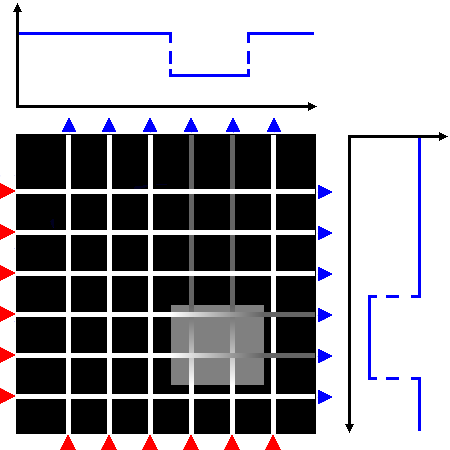
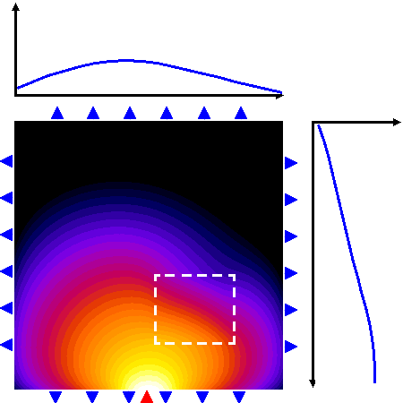
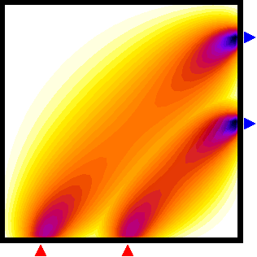
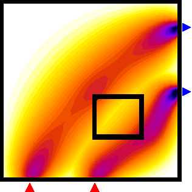

| Image Reconstruction in Diffuse Optical Tomography |
|


Figure 1: A schematic view of projections along straight lines, as encountered in CT imaging, where included objects cast "shadows" on the opposite detector array (top), and a photon density wave from a single source propagating through a diffuse medium with an embedded object (bottom).


Figure 2: Sensitivity distribution for two boundary measurements of modulation amplitude. Left: homogeneous case, right: perturbation of the sensitivity maps by an included absorbing object. |
What is diffuse optical tomography?In clinical applications of diffuse optical tomography (DOT), infrared light is used to probe the body, with the aim to recover the spatial distribution of the optical parameters, such as absorption and scattering, and to present them as 3-D images to the clinician. The optical parameters are related to physiologically relevant properties of blood and tissue oxygenation levels. DOT can therefore be regarded as a functional imaging modality, in contrast to methods that primarily image body structure, such as X-ray computed tomography (X-ray CT) or magnetic resonance imaging (MRI). The use of infrared light for imaging presents a big challenge: Unlike the radiation in CT, which generally travels in straight lines through the body, infrared light is strongly scattered by tissue. For most tissue types, a photon's mean free path of travel between two scattering events is only a fraction of a millimetre. Therefore, any photons that penetrate the tissue will have undergone multiple scattering events. Instead of a pencil beam of radiation travelling through the tissue, we face a diffuse photon density wave. The Figure 1 shows a schematic view of the straight-line projections encountered in CT imaging, and the photon density field calculated for a scattering medium with an embedded rectangular object of increased absorption. Diffuse light propagation complicates image reconstruction. Light travelling between two points on the surface spreads out over a significant volume inside the tissue and therefore carries very little spatial information. to maximise the information contained in the measurements, we use multiple detectors to sample the light emerging over a large surface area from the body for each source. The problem now is to reconstruct images of the internal distribution of the tissue's optical properties from these boundary measurements. Unlike CT, this problem is highly nonlinear, and analytical solutions exist only for a limited number of simple geometries. In general, we must resort to an iterative approach. Measurement sensitivity regionsTo appreciate the difficulty faced when reconstructing images in optical tomography, it is useful to visualise the volume of tissue probed by a single source-detector pair, and the perturbation of this volume in the presence of an embedded inhomogeneity. Such a volume is called a photon measurement density function (PMDF), or sensitivity region, because it shows how a measurement will be affected by a parameter perturbation of a point inside the medium. The calculation of PMDF is essential when constructing the Jacobian of the forward solver, required by many inversion algorithms. We can see that the sensitivity regions spread out widely inside the tissue, which means that each measurement contains little spatial information. Furthermore, the regions are distorted by the included object, so the region probed by a measurement itself depends on the distribution of optical parameters! This has a profound effect on the solution of the imaging problem, because if we want to backproject boundary measurements into the tissue, we need to know the shape of the PMDFs and hence the solution of the problem we want to solve. This demonstrates the nonlinearity of the imaging problem in ODT. In general, it can only be solved by an iterative approach, where the estimates of the PMDFs are updated along with the estimates of the optical parameters. |